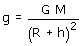
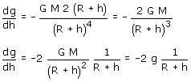
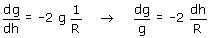

La gravedad a una altura h sobre la superficie terrestre vale:  La variación de la gravedad con la altura se obtendrá derivando esta expresión con respecto a h:  El signo - indica que la gravedad disminuye al aumentar la altura (Evidente) Suponiendo h << R resulta:  La variación relativa de la gravedad (dg/g) es el doble del cociente del cambio de altura entre el radio terrestre (dh/R) Por ejemplo, subiendo a una altura de 6 km el cociente cambio altura-radio será 0.001 (6/6000), por tanto la variación relativa de gravedad será -0.002. Entonces la gravedad valdrá: g' = 9.8 - 9.8·0.002 = 9.78 m/s2 |